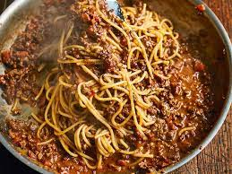

Delicious bolognese recipe

Description
Bolognese sauce is a meat-based sauce in Italian cuisine, typical of the city of Bologna. It is customarily used to dress tagliatelle al ragù and to prepare lasagne alla bolognese.
Ingredients
- pasta
- tomatoes
- beef
- seasoning
Steps:
- Put a large saucepan of water on to boil
- Finely chop the 100g pancetta, having first removed any rind. Finely grate 50g pecorino cheese and 50g parmesan and mix them together.
- Beat the 3 large eggs in a medium bowl and season with a little freshly grated black pepper. Set everything aside.